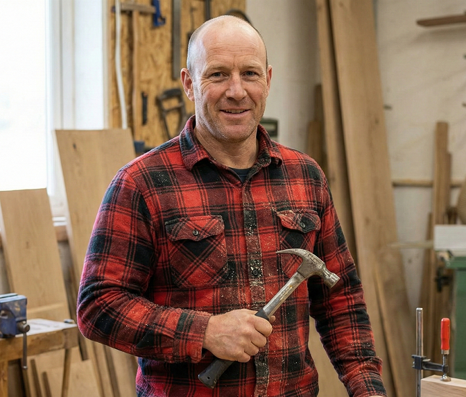
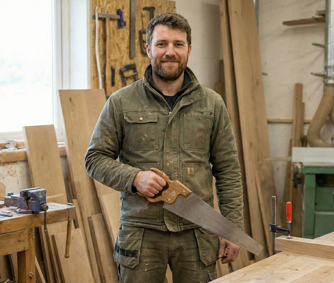

Szakemberek
Ács Feri
Üdvözlöm! Ács Feri vagyok, asztalos. Számomra a fa nem csupán alapanyag, hanem lehetőség arra, hogy valami maradandót alkossak. Műhelyemben a hagyományos asztalosipari technikákat ötvözöm a modern igényekkel. Legyen szó egy robusztus étkezőasztalról, ami köré az egész család leülhet, vagy egy finom megmunkálású íróasztalról, a célom mindig ugyanaz: olyan bútort készíteni, amely nemcsak funkcionális, hanem lelke is van. Nem bútorlapokkal, hanem valódi, tömör fával dolgozom. Hiszek abban, hogy a minőség a részletekben rejlik a pontos illesztésekben, a fa erezetének tiszteletében és a kézi megmunkálás varázsában. Ha olyan bútort keres, ami generációkon át szolgálja majd családját, keressen bizalommal!


Reszelő Peti
Sziasztok, Reszelő Peti vagyok! 👋 Nem csak a nevemben, a kezemben is benne van a szakma! A képeken is láthatjátok: a műhely a második otthonom. Imádom a friss forgács illatát, a tömörfa tapintását és azt a folyamatot, ahogy egy nyers deszkából valami különleges születik. Van, amikor az erő dominál és repül a fűrészpor, máskor pedig a milliméteres finomhangolásoké és a csiszolásé a főszerep. Asztalosként az a küldetésem, hogy az álmaidat fába öntsem. Legyen az egyedi konyhabútor, egy karakteres asztal vagy bármilyen kiegészítő nálam a minőségből nem faragunk le (legfeljebb a fából)! Keress bátran üzenetben, ha egyedi bútort szeretnél!